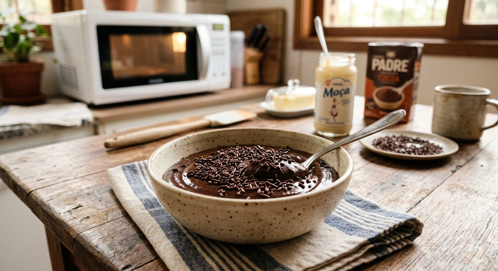
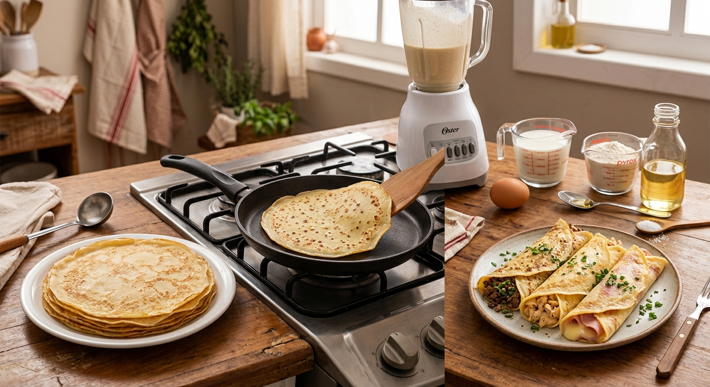

Bem-vindos!
Por: Ariany
Olá, sejam bem-vindos à minha página de receitas! Vou compartilhar receitas fáceis.
Vou compartilhar receitas fáceis e deliciosas
Por: Ariany
Olá, sejam bem-vindos à minha página de receitas! Vou compartilhar receitas fáceis.

Por: Ariany
Ingredientes: 1 lata de leite condensado, 1 colher (sopa) de manteiga e 3 colheres (sopa) de chocolate em pó ou achocolatado.
Preparo: Em um refratário fundo de vidro (para não transbordar), misture todos os ingredientes. Leve ao micro-ondas em potência alta por 3 minutos. Retire, mexa bem com uma colher e volte por mais 2 a 3 minutos. Misture novamente até ficar brilhante e espere esfriar.
Por: Ariany
Ingredientes: 1 ovo, 4 colheres (sopa) de leite, 3 colheres (sopa) de óleo, 2 colheres (sopa) de chocolate em pó, 3 colheres (sopa) de açúcar, 4 colheres (sopa) de farinha de trigo e 1 colher (café) de fermento em pó.
Preparo: Em uma caneca grande (pelo menos 300 ml), bata o ovo com um garfo. Adicione o leite, o óleo, o chocolate e o açúcar, misturando bem. Incorpore a farinha de trigo até a massa ficar lisa e, por último, misture delicadamente o fermento. Leve ao micro-ondas em potência alta por 1 minuto e 30 segundos a 2 minutos.

Por: Ariany
Ingredientes: 1 ovo, 1 xícara (chá) de leite, 1 xícara (chá) de farinha de trigo, 1 colher (sopa) de óleo e 1 pitada de sal.
Preparo: Bata tudo no liquidificador até ficar bem liso. Aqueça uma frigideira antiaderente levemente untada em fogo médio, despeje uma concha pequena de massa e gire a frigideira para espalhar bem fino. Quando as bordas soltarem, vire e doure o outro lado por alguns segundos. Recheie com carne moída, frango cremoso ou queijo com presunto.